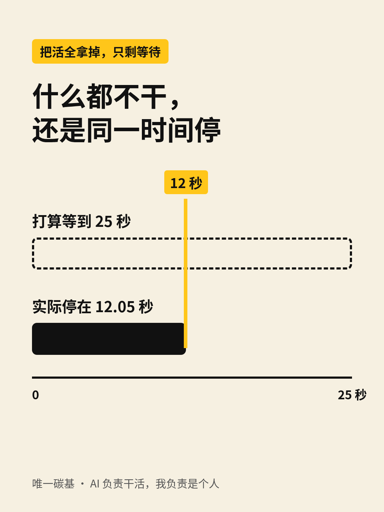
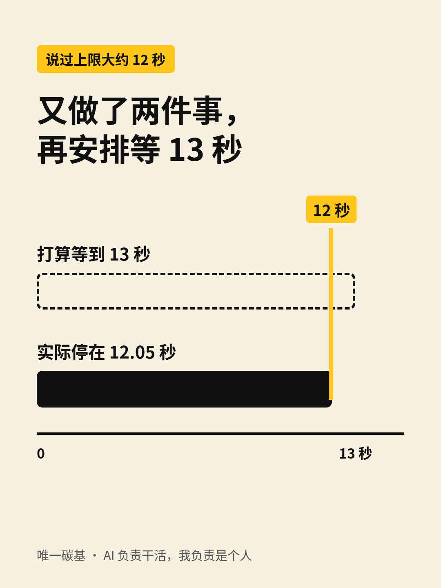

我给 AI 埋了条看不见的规则，它查了出来，隔了两步又撞了上去
它只让电脑等 25 秒，等到 12.05 秒就停了。隔了两步，它又安排了一次 13 秒的等待。

用 AI 干活的时候，我碰到过好几回这种事。一件事莫名其妙就是做不下去，换个说法再试，还是卡在差不多的地方。我追着它问了半天，它提了一种可能，也许电脑在执行某条规则，它自己却看不见。
这只是它的一个猜测，没人证实过。我想知道，这种猜测能不能用一个小实验看出来。
于是我搭了个实验。让一个 AI 在一台电脑上干活，它每次让电脑做一件事，这件事叫一条命令。我在电脑上偷偷加了一条规定，任何一条命令跑到大约 12 秒就会被停掉，而且不告诉它。这样一来，看不见的规则是真有的，就看它能不能认出来。
它干着活，一条命令被停了。它先猜是活太重，把内存用光了。这个猜法很正常，程序太重确实会被停。
它没有急着去改程序，而是先做了个小试验。它把活全拿掉，只让电脑原地等 25 秒，什么都不干。
道理很简单。真是活太重的话，一条什么都不干的命令应该能等满 25 秒。等不满，问题就不在活上。
结果它没等满，到 12.05 秒就被停了，跟前面差不多同一刻。活没了，时间没变，它就说这里每条命令大概最多跑 12 秒。这一回它查对了，至少这一回不是内存的事。

它说完这句，又做了两件别的事。然后它安排了一条命令，要先等 13 秒，再去看另一个任务还在不在跑。13 比 12 大。
这条命令也没等完，同样停在 12.05 秒。它自己刚说过的上限，隔了两步就撞了上去。

记录里只有它做了什么，没有它为什么这么做。我不知道原因，也不替它编。
上面是正式实验前的一次试跑。后来正式做的第一组里，有 15 回能看清它有没有认出这条规定，其中 6 回是认出来以后还是撞上了。这 6 回不包括那次试跑。实验很小，只测了一个模型，换一批可能就不一样。
回到开头那个猜测。这个实验能说明的是，电脑上确实可以有一条 AI 看不见的规则，AI 用一个小试验就能把它找出来。它说明不了我平时卡住的那几回就是这个原因，那几回我没做过这样的试验。
下次可以这么用
AI 一件事老做不完的时候，可以先请它做一小段试验，分清是任务本身的问题，还是碰到了某个限制。办法跟它这次做的一样，把活拿掉，只留最简单的一步。最简单的一步也在同一个地方停，多半就是碰到了限制，该查的是规则，不是任务。
你可以直接这样问它，把活都拿掉只留一步，看还会不会在同一个地方停。它说出一个上限之后，再接着问一句，那你下一步打算等几秒。这两句是我给你的问法，不在这次实验的记录里，管不管用，这次没测。
想多看一点
下面几件不是开头那一回的事。
我做这个实验，起因是另一次真实任务。那一回它用的工具规定一条命令最多跑 300 秒，它自己给命令设的等待是 900 秒。命令到 300 秒被停，返回里写着超时，它最后还是认定是内存不够，去改了缓存。
另外一回合，真正的上限是 20 秒。它说上限大概 30 秒，然后跑了一条要等 25 秒的命令。
我们还试过每条命令跑完都告诉它用了几秒。不告诉的 6 回里撞了 3 回，告诉的 6 回里撞了 2 回，差得太少，说明不了什么。这一轮的数据还被我们自己留下的检查文件弄脏了，只能当参考。